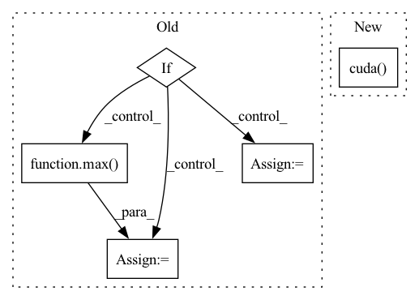

Pattern ID :10843

Before Change
num_workers=args.workers)
train_source_iter = ForeverDataIterator(train_source_loader)
train_target_iter = ForeverDataIterator(train_target_loader)
if args.iters_per_epoch is None:
iters_per_epoch = max(len(train_source_loader), len(train_target_loader))
else:
iters_per_epoch = args.iters_per_epoch
// create model
cudnn.benchmark = True
After Change
// create model
print("=> using pre-trained model "{}"".format(args.arch))
backbone = models.__dict__[args.arch](pretrained=True).cuda()
num_classes = train_source_dataset.num_classes
classifier = ImageClassifier(backbone, num_classes, bottleneck_dim=args.bottleneck_dim,
width=args.bottleneck_dim).cuda()
mdd = MarginDisparityDiscrepancy(args.margin).cuda()
In pattern: SUPERPATTERN
Frequency: 3
Non-data size: 5
Instances
Fragment ID: 37354475
Project Name: thuml/transfer-learning-library
Commit Name: 540d571d6454ca34ee2687a3fb6a2e63e27be111
Time: 2020-03-16
Author: JiangJunguang1123@outlook.com
File Name: examples/mdd.py
M Class Name: AnonimousClass
N Class Name: AnonimousClass
M Method Name: main(1)
N Method Name: main(1)
M Parent Class:
N Parent Class:
M File Name: examples/mdd.py
N File Name: examples/mdd.py
M Start Line: 42
M End Line: 96
N Start Line: 40
N End Line: 100
'>
Before Change
num_workers=args.workers)
train_source_iter = ForeverDataIterator(train_source_loader)
train_target_iter = ForeverDataIterator(train_target_loader)
if args.iters_per_epoch is None:
iters_per_epoch = max(len(train_source_loader), len(train_target_loader))
else:
iters_per_epoch = args.iters_per_epoch
// create model
cudnn.benchmark = True
After Change
// create model
print("=> using pre-trained model "{}"".format(args.arch))
backbone = models.__dict__[args.arch](pretrained=True).cuda()
num_classes = train_source_dataset.num_classes
classifier = ImageClassifier(backbone, num_classes, bottleneck_dim=args.bottleneck_dim,
width=args.bottleneck_dim).cuda()
mdd = MarginDisparityDiscrepancy(args.margin).cuda()
'>
Fragment ID: 37354461
Project Name: thuml/transfer-learning-library
Commit Name: a5d345dfccf4fe0912edb7566476bf26cf0a9ac0
Time: 2020-03-16
Author: JiangJunguang1123@outlook.com
File Name: examples/mdd.py
M Class Name: AnonimousClass
N Class Name: AnonimousClass
M Method Name: main(1)
N Method Name: main(1)
M Parent Class:
N Parent Class:
M File Name: examples/mdd.py
N File Name: examples/mdd.py
M Start Line: 42
M End Line: 96
N Start Line: 40
N End Line: 100
'>
Before Change
test_sampler = torch.utils.data.distributed.DistributedSampler(test_dataset)
test_loader = torch.utils.data.DataLoader(test_dataset, batch_size=batch_size, num_workers=2, pin_memory=True, sampler=test_sampler)
if args.evaluate:
validate(test_loader, model, criterion, local_rank, args)
return
for epoch in range(args.start_epoch, args.epochs):
train_sampler.set_epoch(epoch)
test_sampler.set_epoch(epoch)
adjust_learning_rate(optimizer, epoch, args)
// train for one epoch
train(train_loader, model, criterion, optimizer, epoch, local_rank, args)
// evaluate on validation set
acc1 = validate(val_loader, model, criterion, local_rank, args)
// remember best acc@1 and save checkpoint
is_best = acc1 > best_acc1
best_acc1 = max(acc1, best_acc1)
if args.local_rank == 0:
save_checkpoint(
{
After Change
for step, (images, labels) in enumerate(train_loader):
// 将对应进程的数据放到对应 GPU 上
images = images.cuda(local_rank, non_blocking=True)
labels = labels.cuda(local_rank, non_blocking=True)
outputs = model(images)
loss = criterion(outputs, labels)
'>
Fragment ID: 37354463
Project Name: rentainhe/pytorch-distributed-training
Commit Name: 924a65892510a4cf1352ee408d6186344043f3a4
Time: 2021-01-05
Author: 596106517@qq.com
File Name: distributed.py
M Class Name: AnonimousClass
N Class Name: AnonimousClass
M Method Name: main_worker(3)
N Method Name: main_worker(3)
M Parent Class:
N Parent Class:
M File Name: distributed.py
N File Name: distributed.py
M Start Line: 60
M End Line: 111
N Start Line: 41
N End Line: 110